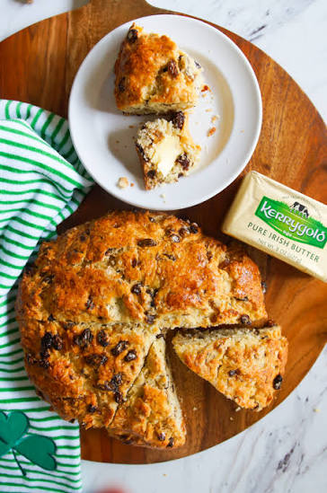
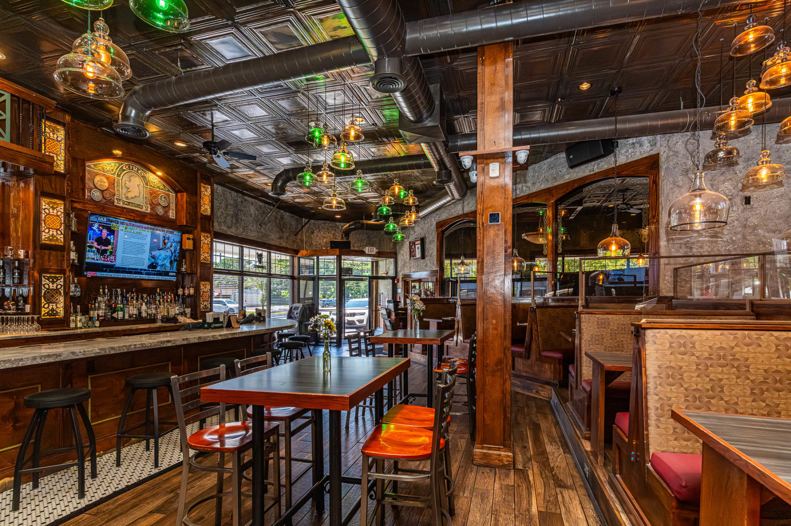

Food is an essential part of traveling because it allows you to experience the rich culture of a new place. Ireland offers a diverse food scene featuring cozy traditional pubs, bustling cafes, and innovative modern dining. From hearty stews cooked in coastal villages to fresh farm-to-table cuisine in city centers, there is something delicious around every corner.
Must-Try Traditional Dishes
A classic, comforting dish made with tender lamb or beef, potatoes, carrots, onions, and a rich savory broth.
A hearty morning meal usually served with eggs, Irish bacon, sausages, baked beans, grilled tomatoes, and black and white pudding.
Traditional dense bread baked using buttermilk and baking soda, served warm alongside fresh local butter or soups.
Surrounded by the Atlantic Ocean, Ireland is famous for wild salmon, fresh oysters, fish and chips, and creamy seafood chowder.
Where to Eat Across Ireland
Popular Dining Hubs
Each major Irish city offers a distinct culinary experience:
- Dublin: Home to Michelin-star dining, international food markets, and historic pub dining.
- Galway: Famous for its seafood festivals, fresh oyster bars, and lively cobblestone street cafes.
- Cork: Known as Ireland's food capital, featuring the historic English Market and artisan food stalls.
Traditional Irish Pub Dining
Irish pubs are far more than just drink venues—they are social hubs that serve traditional hearty meals.
Many historic pubs offer live traditional music (seisiún) alongside classic meals like shepherd's pie and freshly pulled Guinness.
A Taste of the Emerald Isle

Traditional Irish Cuisine
Hearty home-cooked meals featuring locally sourced potatoes, meats, and fresh vegetables cooked to perfection.

Historic Irish Pub Atmosphere
Cozy interiors, warm wooden décor, and friendly locals make pub dining a memorable cultural experience.

Irish Baked Favorites
Delicious freshly baked breads, pastries, and treats crafted with traditional recipes.

Traditional Pubs
Authentic local gathering spots offering classic meals, lively atmospheres, and historic charm.
Explore Official Food Guides
Planning your culinary tour? Check out these external resources to discover top-rated restaurants, local food tours, and seasonal festivals:
Quick Dining Tips
Cafes and traditional pub lunches offer great value for money without sacrificing authentic flavor.
Popular restaurants in Dublin and Galway fill up fast on weekends, so reserve early.
A tip of 10%–15% is standard for sit-down restaurant service if a service fee isn't included.
Frequently Asked Questions
-
restaurant What food is Ireland known for?Ireland is known for classic comfort foods such as Irish stew, soda bread, colcannon, seafood chowder, and a full Irish breakfast.
-
place What cities should I explore for dining?Dublin, Galway, and Cork are top destinations for culinary experiences, artisan markets, and authentic pub dining.
-
event Should I make reservations in advance?Reservations are recommended for fine dining and popular dinner spots in high season, while traditional pubs are usually walk-in friendly.